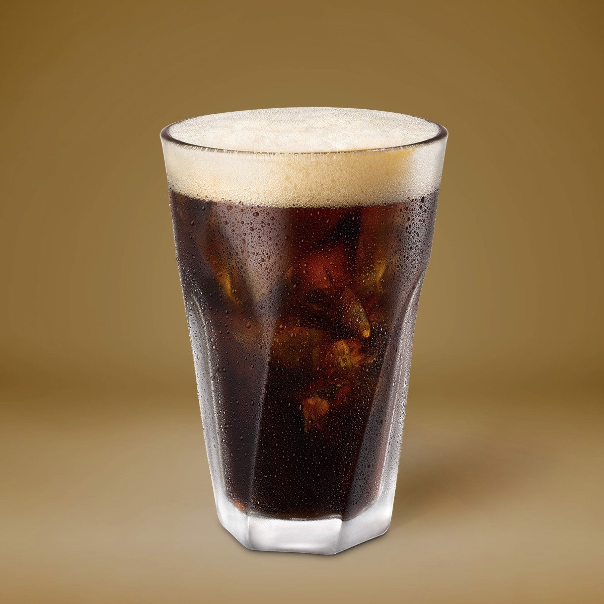

WELLCOME TO THE BUSH COFFEE HOUSE
Đã bao lâu bạn chưa ghé The Bush?
Vậy tại sao không làm ngay một “kèo”
với bạn bè hay gia đình ngay nào!
Với không gian rộng lớn, có cả khu
vui chơi giành riêng cho các bé,
được bao phủ giữa cây xanh và hồ bơi,
mang đến những cảm giác thoải mái nhất,
đảm bảo được khoảng cách an toàn mùa dịch,
mang đến sự yên tâm về sức khỏe cho các bạn.
Đến với The Bush Coffee bạn không những được
check in view đẹp mà còn được thưởng thức những món ăn,
những đồ uống ngon được làm ra với tâm huyết của Đầu bếp và các Bartender.
Đến với The Bush Coffee bạn còn được phục vụ một cách tận tâm và
tận tình bởi những Bạn phục vụ của chúng tôi.
Drinks
Cà phê Việt Nam
Cà phê đen đá
Đây là thứ thức uống có nguồn gốc từ phương Tây, theo chân người Pháp du nhập vào Việt Nam từ thời thuộc địa. Ban đầu đồ uống này chỉ dành riêng cho giới quý tộc, các quan chức Pháp, hay tầng lớp trí thức. Dần sau đó dần trở thành thứ thức uống phổ biến trong cuộc sống của người dân.

Cà phê sữa đá/nóng
Cà phê sữa đá hay còn gọi là nâu đá là thức uống đặc trưng của Việt Nam, đặc biệt tại Sài Gòn. Thức uống này đã được thế giới công nhận là cách pha đặc trưng của Việt Nam với tên gọi tiếng Anh là Vietnamese Iced Coffee.

Bạc sỉu đá/nóng
Bạc xỉu - món đồ uống đặc trưng ở Sài Gòn. “Bạc xỉu” là gọi tắt của cụm từ “bạc tẩy xỉu phé” (bạc - màu trắng, tẩy - ly không, xỉu - một ít, phé - cà phê), của người Tàu sống ở Sài Gòn. Hiểu một cách đơn giản, bạc xỉu chính là sữa nóng thêm chút cà phê.
Ngoài ra, tại quán còn có các món cà phê mới lạ sau:
- Capuchino đá/nóng
- Latte đá/nóng
- Espresso đá/nóng
- Americano đá/nóng